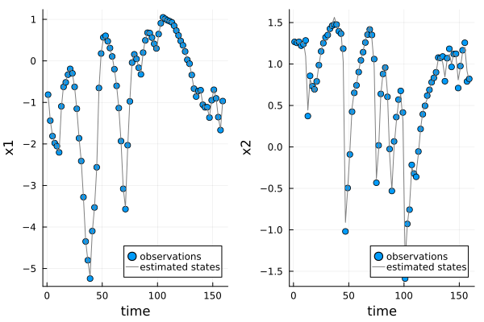

UDE examples
Using time dependent NODEs to predict regiem changes
One intersting use of NODE and UDE models in ecology is detecting and predicting regiem changes, sudden shifts in the strucutre and function of an ecosystem cause by a small change in conditions. Regiem chagnes are caused by the interaction of non-linear feedback mechiamsms, environmental variability and long term environemtnal change. NODE an UDE model built with UniversalDiffEq can capture all three of these proceses opeining upt he possibiltiy of detecting and predicting regiem chagnes from data.
In the followng example we build a NODE model for a two species system that under goes a regiem change. The data are simulated from the Mumby-hastings model of coral-algae competition with an added term for stochastic coral mortaltiy events and a long term increase in the coral mortaltiy rate from increasing temperature. The increasing temperature eventually causes the system to shift from a coral to and algae dominated state (figure 1). The data up to the time of the regime chagne are used to fit the model.

The model is a function of the area covered by coral $p_C$ and algae $p_A$ an environemtnal covariate $X$ that is related to coral mortality and time $t$ to capture the effect of the slowling increasing coral mortaltiy rate. The coral and macro algae abundances are transformed to $x_i = softmax^{-1}(p_i)$ using the inverse soft_max transformation before fitting the model
\[ \frac{dx_C}{dt} = NN_1(x_C,x_A,X,t) \\ \frac{dx_A}{dt} = NN_2(x_C,x_A,X,t) \\ \]
UniversalDiffEq does not have built in methods to constructing time dependent NODES but they can be build easily enough using the CustomDerivatives function. In this case, we initialize a neural network that take four inputs (one for each species, the environemtnal covariate and time) and two outputs using Lux.jl. The deriviatives function derivs! divides time by 50 to match the sale of the other inputs, concatanates the abundnaces of eahc species, the covariate $X$ and time into a vector and evaluates the neural network. The UDE model is constructed using the CustomDerivatives function passing both the species data in a data framed called data and the covairate in a dataframe labeld X.
using Lux, UniversalDiffEq
# set neural network dimensions
dims_in = 4
dims_out = 2
hidden = 10
# Define neurla network with Lux.jl
NN = Lux.Chain(Lux.Dense(dims_in, hidden, tanh), Lux.Dense(hidden,dims_out))
rng = Random.default_rng()
NNparameters, NNstates = Lux.setup(rng,NN)
parameters = (NN = NNparameters,)
# Define derivatives (time dependent NODE)
function derivs!(du,u,X,p,t)
inputs = [u[1],u[2],X[1],t/50-1.0]
vals = NN(inputs,p.NN,NNstates)[1]
du[1] = vals[1]
du[2] = vals[2]
return du
end
model = UniversalDiffEq.CustomDerivatives(data[1:80,:],X,derivs!,parameters;proc_weight=2.5,obs_weight=10.0,reg_weight=10^-3.5)
gradient_decent!(model, verbos = true, maxiter = 250)
BFGS!(model, verbos = true )To verify the model fit